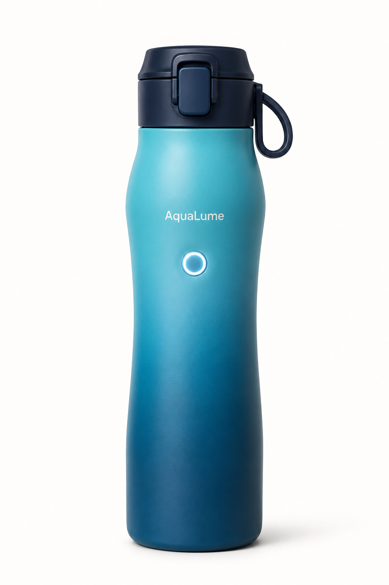
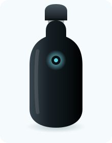
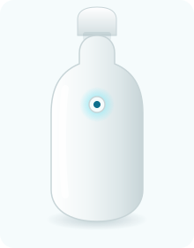
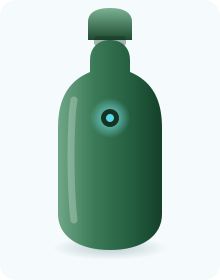
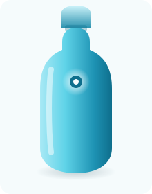

AquaLume — Startup
„Hydration, Reimagined.“
Die AquaLume UV Flask ist eine smarte Wasserflasche, die Wasser reinigt, den täglichen Trinkkonsum trackt und sich selbst sauber hält.

| Reinigung | UV-C, Aktivierung per Knopfdruck |
|---|---|
| Gehäuse | Doppelwandiger Edelstahl, isoliert (bis zu 24 Std.) |
| Tracking | Smarter Sensor + Begleit-App |
| Akku | USB-C, Laufzeit bis zu 2 Wochen |
| Größe | 500 ml / 750 ml |
| Farben | Schwarz, Weiß, Waldgrün, Eisblau |



